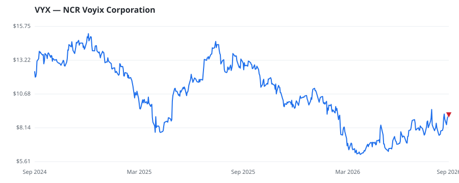

bullish · bearish · n/a — dots: price>SMA10 · SMA10>SMA50 · SMA50>SMA200 · up>down volume (20d)
Technology Hardware · small cap

NCR Voyix Corp is a company providing services of digital commerce solutions for retail, restaurant, and digital banking. The company operates in two reportable segments: Retail, and Restaurants. The Retail segment provides software solutions for retailers of all sizes, enhancing operational efficiency and customer experience. The Restaurants segment offers end-to-end technology solutions for food service establishments, improving operational efficiency, and customer satisfaction, and reducing costs. The company derives maximum revenue from Retail segment. Geographically, the company operates CALCULATING & ACCOUNTING MACHINES (NO ELECTRONIC COMPUTERS) · website
| Revenue | $2.7B | Net income | $62.0M |
|---|---|---|---|
| Operating income | $26.0M | Diluted EPS | $0.30 |
| Assets | $3.9B | Equity | $948.0M |
🛒 Newly buying: Archon Capital Management LLC (+96%, 0.5% of book)
| Fund | Fund alpha vs SPY | Position | % of book |
|---|---|---|---|
| MASTERS CAPITAL MANAGEMENT LLC | +15% | $33M | 4.6% |
| Archon Capital Management LLC | +96% | $1M | 0.5% |
Hedge data: SEC EDGAR 13F · ranked funds beat SPY in >50% of their quarters · fund alpha = mirror-portfolio return minus SPY.